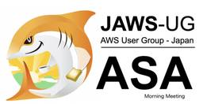
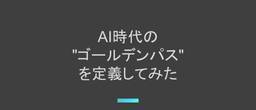
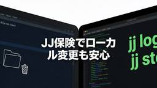
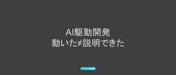
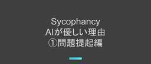

APC 技術ブログ
https://techblog.ap-com.co.jp/
株式会社エーピーコミュニケーションズの技術ブログです。
フィード
【AKS】AKS環境に EnvoyGateway を導入して GatewayAPI による通信を検証してみた
APC 技術ブログ
はじめに 準備 1. AKSクラスターの作成 2. サンプルアプリのデプロイ 3. EnvoyGatewayのインストール 4. GatewayClass, Gatewayをデプロイする。 GatewayClass Gateway HttpRoute 5.サンプルアプリの為のルーティングのHTTPRouteをデプロイする。 5. まとめ ACS事業部のご紹介 はじめに 皆様、こんにちは。ACS事業部 木戸と申します。 今回は AKS 環境で Gateway API を利用するために EnvoyGateway を導入し、HTTPRoute を利用してURLのパスに応じたルーティングが行えるかを検…
2日前

【AWS】JAWS-UG 朝会で『OpenClaw を Amazon Lightsail で動かす理由』というタイトルで登壇しました
APC 技術ブログ
『OpenClaw を Amazon Lightsail で動かす理由』というタイトルで登壇しました
3日前

AI時代の"ゴールデンパス"、まだ誰も定義していないなら自分たちで定義してみた
APC 技術ブログ
こんにちは。ACS事業部の越川です。 「ゴールデンパス」とは何か なぜ今、AI時代のゴールデンパスが必要なのか ゴールデンパスの3つの構成要素 1. インストラクション — AIの行動規範 2. Skills — AIが実行できるタスクの定義 3. ADR — 判断の「なぜ」を記録する 実践：このブログワークフローはゴールデンパスだった 組織への展開：スモールに真似できる形で まとめ お知らせ 2026年3月17日、SoftBank Tech Nightをオンラインで視聴しました。草間一人氏（PagerDuty / Platform Engineering Meetupオーガナイザー）のセッシ…
4日前
【Zscaler】「遅い」の先を可視化する—ZDX Cloud Path Probeの仕組みとダッシュボードの読み方（前編）
APC 技術ブログ
ZDX Cloud Path Probeの仕組みとダッシュボードの読み方を解説。パスマッピングやAdaptive Modeの動作を整理したうえで、レイテンシグラフ・Hop View・Command Line Viewを使った障害区間の特定方法を3ステップで紹介します。
4日前
Copilot coding agentのPR descriptionは変えられないのか？ — GitHub Actionsで変えた
APC 技術ブログ
こんにちは。ACS事業部の越川です。 GitHub Copilot coding agentが自動生成するPRの本文（description）、チームのフォーマットに合わせたいと思ったことはありませんか？ 先日、この課題を5パターンで検証した記事が公開されました。 zenn.dev 結論は「copilot-instructions.mdもPRテンプレートも効かない」。PR本文の生成はインストラクションとは別の独立したフェーズで実行されているため、現時点では公式の方法ではカスタマイズできません。 本記事では、この「できなかった」に対して、GitHub Actionsによる後処理で書き換える方法を…
4日前

Datadog MCP ServerがGAされたので、AWS DevOps Agentと連携して触ってみた
APC 技術ブログ
こんにちは。クラウド事業部の遠見です。 本記事は「Datadog MCP Server」と「AWS DevOps Agent」の連携を実際に検証したエンジニアが、内容をできる限り客観的に共有することを目的に作成しました。 今回は、2026年3月10日に一般提供（GA）が開始された「Datadog MCP Server」を、AWSから現在プレビュー版として提供されている「AWS DevOps Agent」を使って利用するハンズオンを行いました。 www.datadoghq.com 独自の検証や工夫したポイントも含めて、オリジナルな体験記として参考にしていただければ幸いです。 目次 目次 はじめに…
4日前

JJ保険に救われた話
APC 技術ブログ
JJ保険に救われた話 – Copilot時代のローカル変更バックアップ こんにちは、エーピーコミュニケーションズ ACS事業部の福井です。 最近は GitHub Copilot CLI を使った開発スタイルを本格的に試しています。 プロンプト一発で広範囲をガッと書き換えられるあの感覚、クセになりますよね。 そんなある日、Copilot CLI で複数ファイルをまたいだ機能変更を一気に進めていたときのこと。 一段落したのでブランチを切り替えてリフレッシュしたら……あれ？ あのファイルがない。 ローカルにしか置いていなかった下書き用の 309.md が、きれいさっぱり消えていました。 「やったな、…
5日前

AIで「動いた」を人に説明できますか？ 〜社内共有会で見えた理解負債の正体〜
APC 技術ブログ
こんにちは。ACS事業部の越川です。 先日、社内で「AIによるIaC生成」の現状共有会がありました。あるメンバーが、AIエージェントを使って要件からTerraformコードを自動生成する仕組みを作り、その進捗を共有する会です。 10名以上が参加し、活発な議論が生まれました。しかし、開始直後から参加者の間に混乱が広がりました。 「どのファイルを人が作って、どれをAIが作ったのか知りたい」 「ユーザーとしてのスタート地点がどこなのか知りたい」 こうした声が次々と上がったのです。 AIで「動いた」は、説明できたことにならない 発表者はVS Codeで生成されたファイルを見せながら説明していましたが、…
5日前
【Zscaler】アプリは本当に動いている？ZDX Web Probeで可用性と応答性能を可視化する
APC 技術ブログ
ZDX Web Probeの仕組みと設定ポイントを解説。HTTP GETリクエストによるアプリケーション可用性の判定方法、Page Fetch TimeやTTFBなどの収集メトリクス、成功ステータスコードの選定や監視対象URLの設計指針を、ZDX Standardライセンスから活用できる基本機能として整理します。
5日前

AIはあなたに同調する — Sycophancy問題を知っていますか① 〜問題提起編〜
APC 技術ブログ
こんにちは。ACS事業部の越川です。 前回の記事で、AIコーディングの「3つの負債」を防ぐ実践として、インストラクションファイルへの蓄積やフィードバックの記録を紹介しました。 techblog.ap-com.co.jp しかしその後、ある記事をきっかけに、自分が推奨した「蓄積」にリスクがあることに気づきました。 AIはあなたに同調する きっかけになったのは、MIT/Penn State大学の2026年の研究を紹介するこちらの記事です。 qiita.com この記事が扱っているのは、Sycophancy（シコファンシー）と呼ばれる現象です。日本語では「おべっか」「追従」と訳されます。 Sycop…
5日前
GitHub Copilotを「Organization単位」で管理する：ghqとGitHub Copilot CLIを組み合わせた多リポジトリ横断でのプロジェクト管理と活用tips
APC 技術ブログ
目次 目次 1. 効率的な開発の土台：ghq でリポジトリを整理し、Organizationレベルで管理を行う 階層構造のイメージ セキュリティと境界線の維持 おまけ：遊び心について 2. AIエージェント設定の役割分担 3. 実践：AIを「業務ナビゲーター」に変える 4. 動作の速さを重視：GitHub Copilot CLIの常用 まとめ：コンテキストを整え、責任を持って「使いこなす」 高品質にするコツ：とにかく自分とAIとの認知のギャップを減らせ 案件業務でAIを扱う際の責任について ACS事業部のご紹介 こんにちは。ACS事業部の青木です。 先日、同じ事業部の越川さんが以下のようなブロ…
6日前

KubeCon + CloudNativeCon Europe 2026 現地リポート 予告
APC 技術ブログ
はじめに みなさんこんにちは。エーピーコミュニケーションズ ACS事業部亀崎です。 KubeCon + CloudNativeCon Europe 2026が3月23日～3月26日にアムステルダムで開催されます。 今年もこちらのイベントに現地参加させていただけることになりました。 弊社ではこれまでにもKubeConに現地参加させていただいており、こちらのサイトで、 現地の様子やセッションの内容といった現地リポートを公開させていただいております。 techblog.ap-com.co.jp もちろん今回も現地リポートを公開させていただく予定です。 できる限りの情報をご報告いただければと考えており…
6日前

MS Learnで実践！Microsoft FoundryとVS Code拡張機能でAIエージェントを構築・連携する
APC 技術ブログ
こんにちは。クラウド事業部の遠見です。 本記事は、Microsoft Learn（以下、MS Learn）のラーニングコースを実際に受講・検証したエンジニアが、内容をできる限り客観的に共有することを目的に作成しました。 アイキャッチ画像はイメージです。画像内のロゴや名称は各社の商標または登録商標です。 前回に続いて、MS Learnのラーニングコースで学習しています。 今回は、以下のコースで実際に環境を構築して、Microsoft Foundry（旧Azure AI Foundry）ポータルとVS Code拡張機能を使用してAIエージェントを構築・デプロイするハンズオンを行いました。 lear…
9日前
AIコーディングの「3つの負債」を溜めない技術 — 個人の実践から組織の仕組みへ
APC 技術ブログ
こんにちは。ACS事業部の越川です。 2026年3月12日、@ITに「AIコーディングはなぜ後から苦しくなるのか？」という記事が公開されました。従来の「技術負債」に加えて、「理解負債」と「認知負債」という新しい概念が紹介されています。 atmarkit.itmedia.co.jp AIコーディングツールを日常的に使っている身として、この記事の問題提起はよく理解できます。しかし同時に、すでにその時代は来ているし、対策も実践の中で見えていると感じました。 本記事では、3つの負債それぞれに対して、私が日々の業務で実践している具体的な防ぎ方を紹介します。 3つの負債とは何か @ITの記事では、AIコー…
9日前
AIに毎回同じ指示をしていませんか？ — インストラクションファイルで協働の質を育てる方法
APC 技術ブログ
こんにちは。ACS事業部の越川です。 コーディングツール（GitHub Copilot CLI、Claude Code、Cline、Cursorなど）を使っていて、こんな経験はないでしょうか。 毎回「変数名はキャメルケースで」と伝えている 毎回「エラーハンドリングはこのパターンで」と指示している 前回指摘したはずのコーディング規約違反が、次のセッションでまた起きる これはAIの問題ではなく、指示の仕方の問題です。毎回ゼロから指示を押し込むのではなく、文脈を蓄積してAIが自ら引き出せる状態にする。そのために使うのがインストラクションファイルです。 本記事では、インストラクションファイルの構造と書…
10日前
【OCI】IAMポリシーによる権限管理を構文から理解してみた
APC 技術ブログ
目次 目次 はじめに ポリシー構文の基本知識 ポリシー構文の各要素の解説 subject verb resource location conditions その他知っておくとよさそうなこと 参考資料 お知らせ はじめに こんにちは！クラウド事業部の中根です。 OCIの権限管理について理解を深めるため、IAMポリシー構文を基に自分なりに理解して、ポイントをまとめてみました。 ポリシー構文の基本知識 ※本記事では、アイデンティティ・ドメインありの方を前提としています。 ポリシー構文は以下の通りです。 Allow <subject> to <verb> <resource> in <locatio…
10日前
AI議事録の固有名詞誤変換、専用ツールを使わずコーディングツールで解決した話
APC 技術ブログ
こんにちは。ACS事業部の越川です。 AI議事録・文字起こしツールが当たり前になった今、多くの方がこんな経験をしていないでしょうか。「社員の名前は正確なのに、顧客の固有名詞がことごとく間違っている」。私もまさにその課題に直面しましたが、専用の議事録ツールを導入するのではなく、普段使っているコーディングツールで解決できました。今回はその実践を共有します。 なお、本記事で紹介するAIツールの業務利用については、弊社のAI利用ガイドラインおよびNDAに関するコンプライアンスを遵守した上で公開しています。 AI文字起こしの「あるある」問題 世の中の解決策 — 専用ツールの辞書機能 私のアプローチ — …
10日前
MS Learnで実践！PythonアプリにOpenTelemetryを実装してApplication Insightsでボトルネックを特定する
APC 技術ブログ
こんにちは。クラウド事業部の遠見です。 アイキャッチ画像はイメージです。画像内のロゴや名称は各社の商標または登録商標です。 前回に続いて、Microsoft Learn（以下、MS Learn）のラーニングコースでオブザーバビリティを学習しています。 今回は、以下のコースで実際に環境を構築して、Python FlaskアプリケーションにOpenTelemetryを実装し、Azure Application Insightsを使ってパフォーマンスのボトルネックを特定するハンズオンを行いました。 learn.microsoft.com この記事では、ハンズオンの手順に沿ってアプリを実行した様子や、…
11日前
社内イベント「ゆるっと GitHub Copilot 活用トーク」でGitHub Copilot CLIの活用法を語ってきた
APC 技術ブログ
こんにちは。ACS事業部の越川です。 先日、社内で開催された「ゆるっと GitHub Copilot 活用トーク」というイベントにスピーカーとして参加してきました。金曜の夕方、ゆるい雰囲気の中でGitHub Copilotの活用法を語り合うという会です。トークの中心はリリースされたばかりのGitHub Copilot CLIで、今回はその様子と気づきを共有します。 GitHub Copilot CLIとは イベントの概要 GitHub Copilot CLIとの出会い 活用スタイルの違いが面白い 私のスタイル：全部インストラクションに書く派 もう一人のスタイル：安全重視のカスタマイズ派 AIと…
12日前
開発者はもうシークレットを意識しない。AKSとSecret Store CSI Driverで作る "セキュアな" Platform Engineering基盤② ～CSI Driverがもたらす解決策～
APC 技術ブログ
CSI Driverの概要図 はじめに：理想をどうやって「現実」にするか？ こんにちは！APCのSAT室PE推進チームに所属している簗田です。 [前回（第1回）の記事]では、AKSにおけるシークレット管理の「理想の姿」を、DevEx（開発者体験）・ガバナンス・運用性の3つの観点で整理しました。 「Base64のエンコードから解放されたい！」「セキュアに、かつ自動でローテーションしたい！」という皆さんの(？）切実な願いを叶えるための"部品"として、今回ご紹介するのが 「Azure Key Vault Provider for Secrets Store CSI Driver」 です。 「名前が長…
12日前
【Backstage】 Tech radarで技術選定の可視化とガバナンス
APC 技術ブログ
皆さんこんにちは。エーピーコミュニケーションズ ACS事業部の亀崎です。 皆さんの組織では、取り組む技術の選定やその評価をどのように行っていますか？どのように共有していますか？ 組織のサイロ化を（適切に）解消していくと、効率的な技術選定を推進するためにそうした情報を組織的に共有していく必要が出てきます。 そこで登場するのが「Tech Radar」です。 エンタープライズ開発を加速させる「Tech Radar」の力：Backstageでの技術選定の可視化とガバナンス 現代のソフトウェア開発において、増え続ける技術スタックをどう管理し、組織全体で一貫性を保つかは極めて重要な戦略的課題です。この課題…
12日前
今からでも遅くない GitHub Copilot CLI 入門 ~ 祝 GitHub Copilot CLI GA ~
APC 技術ブログ
はじめに GitHub Copilot CLI とは 対応プラン セットアップ方法 インストール 起動 基本的な使い方 通常のチャットモード（デフォルト） Plan モード Auto Pilot モード 利用可能なコマンドなどの確認 shell コマンドの実行 コマンド実行の承認 カスタムインストラクションやカスタムエージェント 初心者が押さえておきたい基本のベストプラクティス Plan モードを積極的に活用する 適度にセッションをクリアする まとめ 参考情報 ACS 事業部のご紹介 はじめに ACS 事業部の井田です。皆さん、GitHub Copilot 活用していますか？ GitHub C…
15日前
MS Learnで実践！環境構築のトラブルを抜けて、今すぐ始めるオブザーバビリティ学習
APC 技術ブログ
こんにちは。クラウド事業部の遠見です。 前回に続いて、Microsoft Learn（以下、MS Learn）のラーニングコースでオブザーバビリティを学習しています。 今回は、以下のコースで実際に環境を構築してAzure Application InsightsやGrafana、Prometheus、Zipkinを動かしました。 英語版 Implement observability in a cloud-native .NET 8 application with OpenTelemetry 日本語版 OpenTelemetry を使用してクラウドネイティブの .NET 8 アプリケーション…
16日前
【OCI】NetworkFirewallのプライベートIP専用NATではまってみた
APC 技術ブログ
目次 目次 はじめに どんなひとに読んで欲しい やりたかったこと プライベートリソースとパブリックリソース 対策した構成 まとめ 関連記事 お知らせ はじめに こんにちは、クラウド事業部の松尾です。 OCIのNetwork Firewallはアクセス制御やIDS/IPSなどが主な機能ですが、実はNAT機能もあります。 ただし、「プライベートIPのみをサポートしているNAT」であることに注意しましょう！ 私はこれを見落としてしまい設計をやり直すことになりました。どんな内容だったか紹介します。 どんなひとに読んで欲しい Network Firewallをこれから使ってみたい人 Network Fi…
17日前
【Zscaler】ネットワークのブラックボックスを解消！Network Intelligenceで「どこが遅いか」を即座に特定する
APC 技術ブログ
Zscaler Digital Experience（ZDX）の「Network Intelligence」を活用し、インターネット経路のブラックボックスを解消する方法を解説します。遅延の原因はユーザー？ISP？はたまたその先？ Sankey図による特定やピアインパクト分析での切り分け、障害経路を即座に迂回する実践的な運用ノウハウを紹介します。
18日前
APアカデミー「Java研修（オブジェクト指向編）」受講レポート
APC 技術ブログ
はじめに こんにちは、iTOC事業部の横地です。 弊社には「APアカデミー」という技術系やビジネス系の社内研修が用意されています。 AP アカデミー キャリアアップガイド 先日、数年ぶりに AP アカデミーを受講しました。受講したのは「Java研修（オブジェクト指向編）」です。 直近で業務で必要になったわけではないのですが、ときどき設計（特にデザインパターン系）やコードのよしあしに関する本を読むときにサンプルコードが Java だったりするので、そのときに抵抗なく読めるようにしたいというのが主な目的でした。また、普段コードを書くことがないので、たまには学習したほうが良いかなという思いもありまし…
18日前
Backstageが持つ「２つの認証機能」
APC 技術ブログ
はじめに みなさん、こんにちは。エーピーコミュニケーションズ ACS事業部 亀崎です。 今回はなにかと混乱することが多いBackstageの認証について解説していきます。 Backstageの認証機能 Backstageには役割の異なる2種類の認証が存在します 。これらを混同せずに設計することが、使い勝手の良いポータル構築の鍵となります。 その２つとは「Backstage本体のユーザー認証」と「外部サービス連携用のユーザー認証」です。 Backstage本体のユーザー認証 外部サービス連携用のユーザー認証 目的 Backstageへのサインインとアクセス制御 外部データの取得・操作 対象 Ba…
18日前
【Azure】MS Learnで簡単に実践！Application Insightsを触ってみた
APC 技術ブログ
こんにちは。クラウド事業部の遠見です。 最近、システムの「オブザーバビリティ（可観測性）」への関心が高まっています。 今回はその学習の一環として、Microsoft Learn（以下、MS Learn）のハンズオンを通じて、Azureのモニタリングツールである Application Insights を触ってみました。 MS Learnのハンズオンは、とてもスムーズに進められるのでお勧めです。 その中でも、一部ハンズオン通りにいかない箇所や自分の視点で検証したことがあるので、それらを中心にまとめたいと思います。 目次 目次 参考にしたリソース 検証日時 使用したリソースの構成（パラメータ） …
19日前
【AKS】 Ingress NGINXからNGINX Gateway Fabricへの乗り換え記
APC 技術ブログ
はじめに みなさんこんにちは。エーピーコミュニケーションズ ACS事業部亀崎です。 みなさんもIngress NGINXのRetirementについてのニュースはご存知かとおもいます。 retireとなるのは2026年3月末。そう、まもなくです。 www.kubernetes.dev 以降は他のIngress Controllerか、Gateway APIに乗り換えを求められています。 私の手元の環境でも、AKS上に（OSS版の）Ingress NGINXをインストールして利用していました。 このため、どこかに移行する必要がありました。 では、どこに移行するか？ 今後はInbound Traf…
21日前
Microsoft Foundry + MCP サーバー接続の罠：パブリック公開必須の制約と名前解決の注意点
APC 技術ブログ
目次 目次 はじめに Foundry エージェントが MCP に接続する際の実際の挙動 MCP をパブリック公開する場合に押さえておきたいセキュリティ対策 AI Search（Foundry IQ）で行うべき設定 Logic Apps / Functions を MCP として公開する場合 最後に ACS 事業部のご紹介 はじめに こんにちは。ACS 事業部の折田です。 Microsoft Foundry で ツールとしてMCP（Model Context Protocol）を利用する際、公式ドキュメントには以下のような重要な注意書きがあります。 「プライベート MCP サーバー: 同じ仮想ネ…
23日前